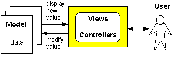

An importance advance in the design and implementation of interactive graphics applications was the development of the Model - View - Controller (MVC) paradigm.
This is not a programming language or even a code library. It is a way of thinking about and organizing the code in GUI-intensive systems. It is a particular instance of the general concept of 'modular programming.'
Like most good ideas, the concept of MVC is simple. You organize your application into two basic components:
A view is something that graphically displays one or more pieces of model data to the user. A view can be a number or string printed on screen, a thermometer, a gauge, a map, and so on.
A controller is something the user can manipulate to change model data. A controller can be a field you type into, an icon you drag around, a button you click, and so on.
Sometimes, the same graphical object is both a view and a controller. A scroll bar, for example, is a view that tells you where you are in a document. ItÕs also a controller that lets you change where you are in the document.
Although the model-view-controller paradigm was developed in the context of graphical interfaces, it in fact applies to a text or text plus grpahics interface, such as your game manager project. In non-graphical programs, the views are whatever you print to indicate internal values. A view might be a table of numbers, a list of field names and field values, a graphical drawing of a game board, and so on. A controller would be anything your program presents to the user that lets them do things. Most typically this would be either a menu choice, e.g.,
Please pick a level: 1. Beginner 2. Avergae 3. Expert Enter level [1 - 3]:
or a request for a value, e.g.,
What's your name: How many bombs should I hide [2 - 10]:
Examples
In a spreadsheet, the model is an array of numbers and formulas and formatting codes. The view is a grid with lines and text and graphics and so on. Each cell in the grid is a controller; clicking on a cell lets the user change the number or formula or format of that cell.
In a chess game, the model is an array specifying what pieces are where on the board, and some variables indicating what the score is, and whose turn it is. The view is a grid with graphical icons representing the various pieces. Each icon is a controller that the user can drag from one square to another.
An MVC-organized program works like this:

Normally, a controller does not directly affect any view, except of course itself, if itÕs a view controller, such as a slider. A controller affects the model and the model updates the views. In this way, an important property is maintained: there is nothing important on the screen that is not represented in the model.
The separation of code into model, views, and controllers has a number of benefits: